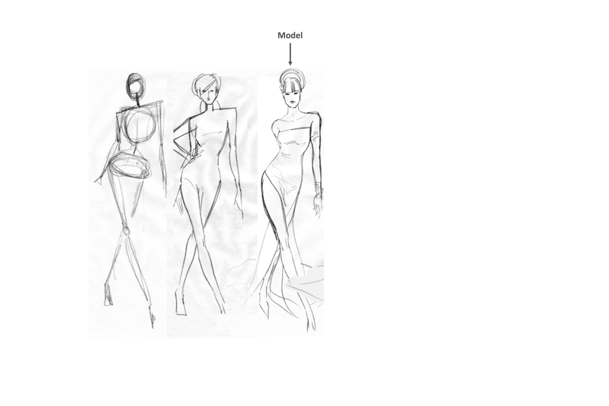
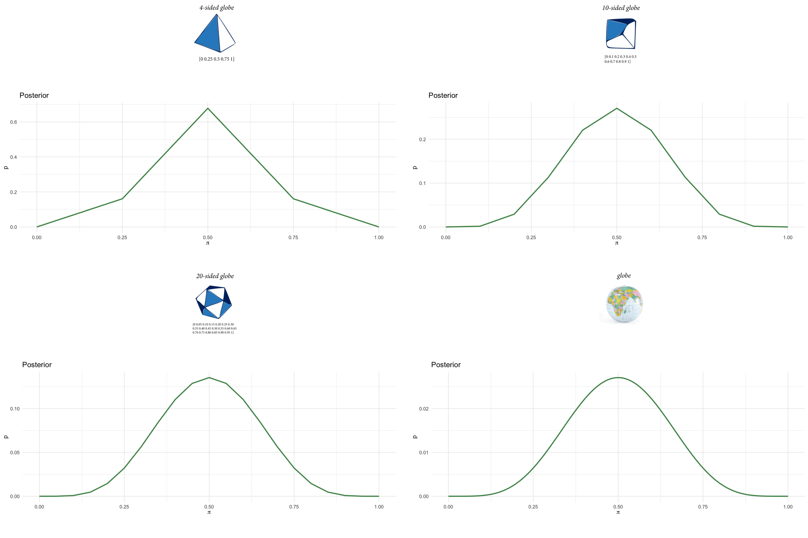
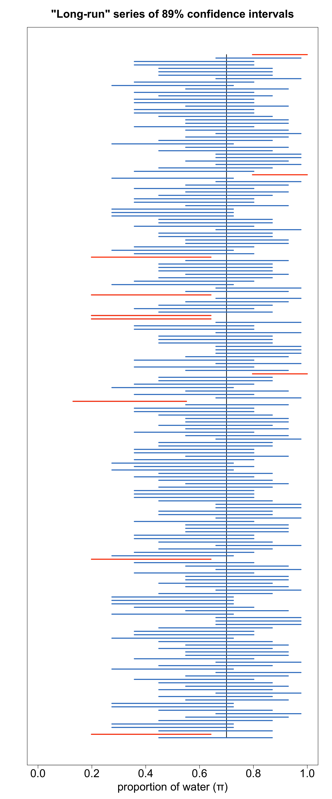
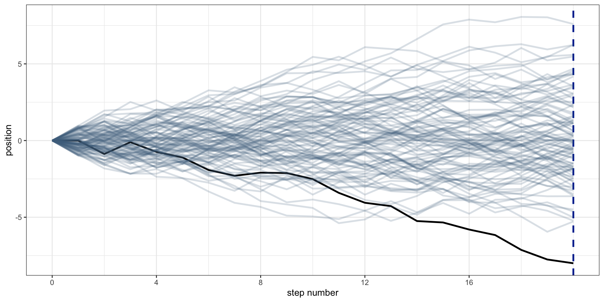
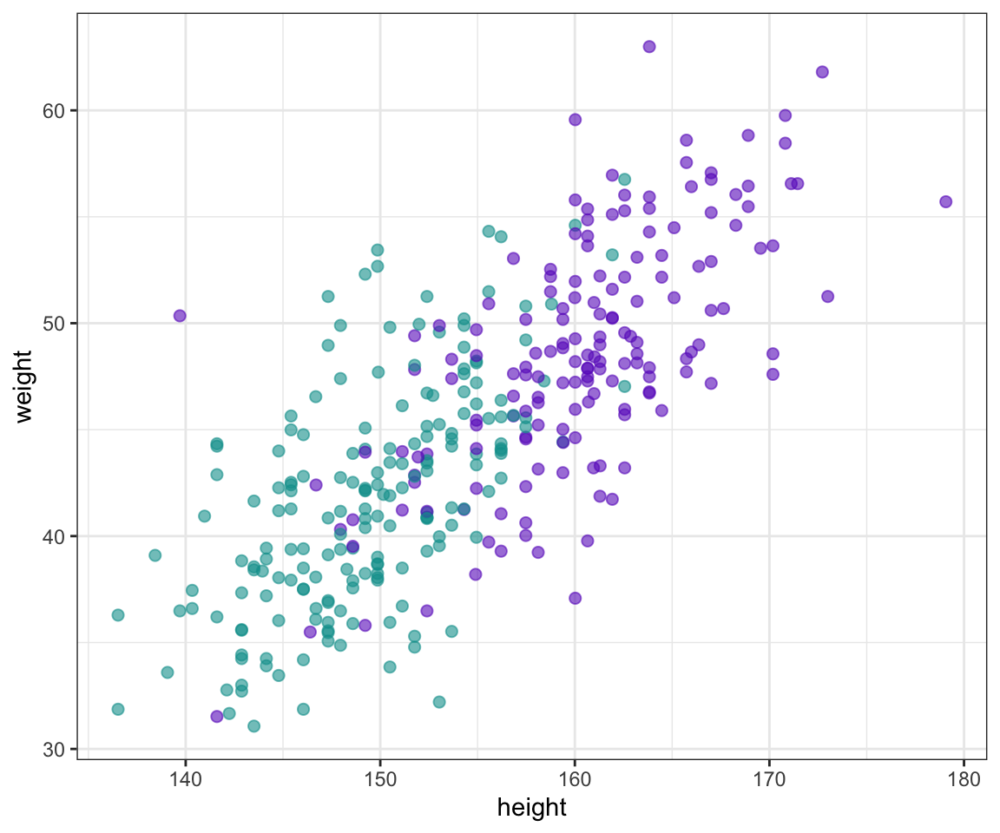
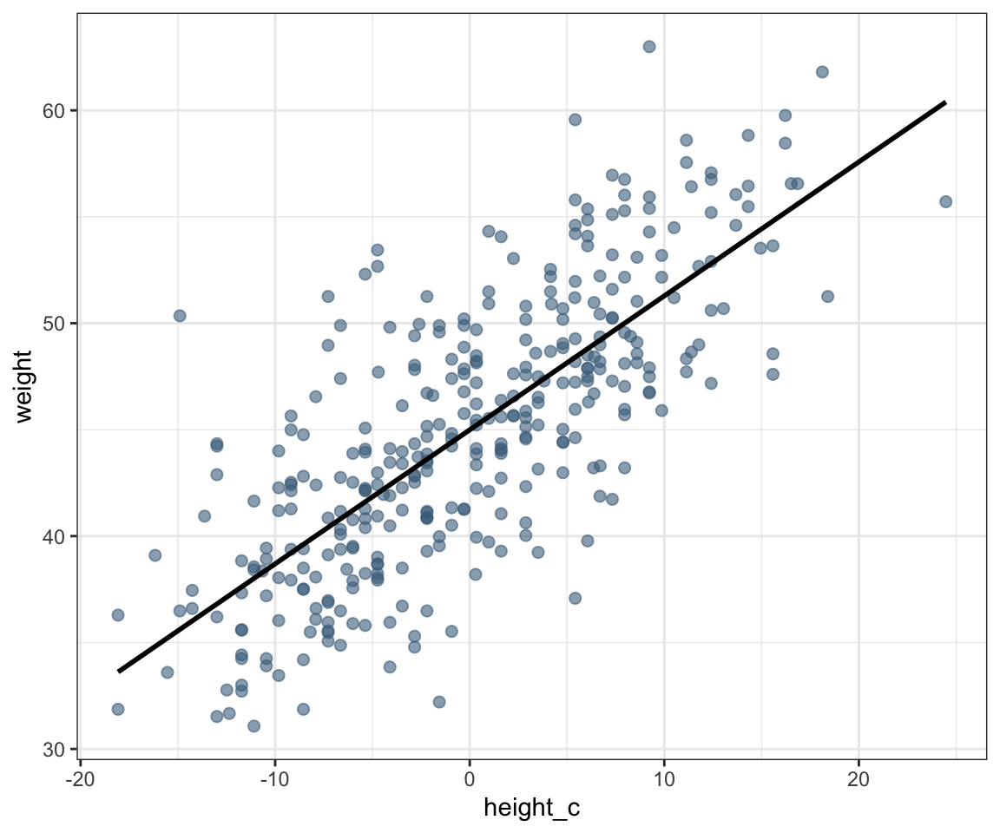
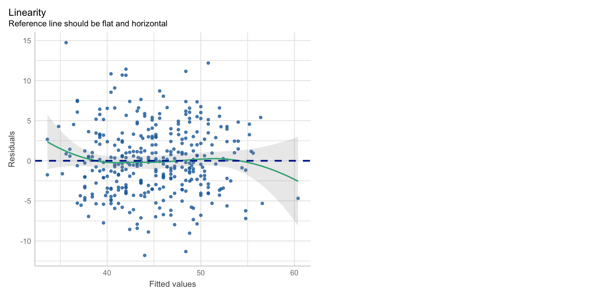
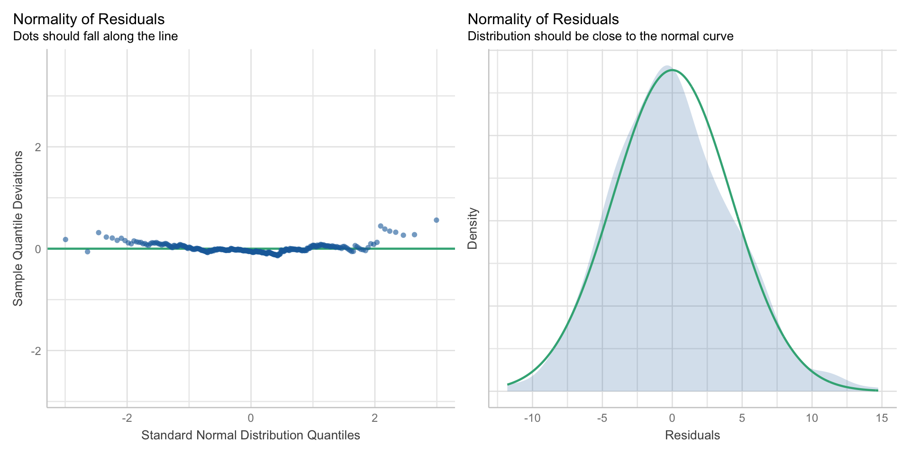
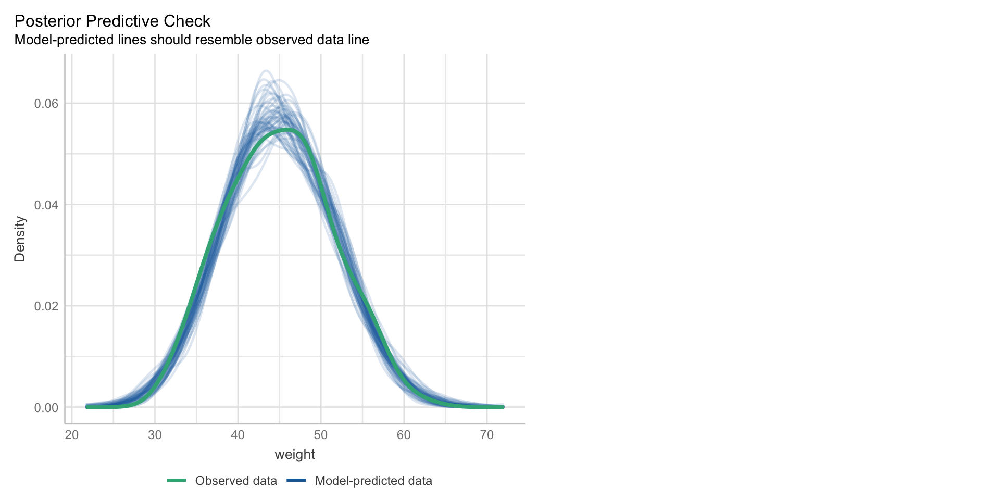

Data analysis workflow and linear models
Statistical inference
2025-03-03
Statistical inference
- Statistical inference is the process of using facts we know (the data) to learn about facts we don’t know (the DGP)
\[ \begin{array}{ll} 1. & \text{data (measurements of observables)} \\ 2. & \text{model of the DGP} \\ \hline \therefore & \text{unknown quantities} \\ \end{array} \]
Statistical inference
- Statistical inference is the process of using facts we know (the data) to learn about facts we don’t know (the DGP)
\[ \begin{array}{ll} 1. & \{ x_1, x_2, \ldots, x_n \} \\ 2. & p(x \mid M) \\ \hline \therefore & \text{unknown quantities} \\ \end{array} \]
Statistical inference
Statistical inference is the process of using facts we know (the data) to learn about facts we don’t know (the DGP)
Data model (a.k.a. process model or likelihood):
Statistical inference
Statistical inference is the process of using facts we know (the data) to learn about facts we don’t know (the DGP)
Data model (a.k.a. process model or likelihood):
- \(p(x \mid M)\) = probability distribution of data \(x\) given model assumptions \(M\)
Inverse model:
\(p(M \mid x)\) = probability distribution of \(M\) given \(x\)
The problem of statistical inference: It is impossible to calculate the inverse probability!
The (more reasonable, limited) goal of statistical inference:
- Let \(M = \{M^*, \theta\}\), where \(M^*\) (the functional form of \(M\)) is assumed and \(\theta\) are the parameters of \(M^*\) to be learned from \(x\)
Statistical inference
Statistical inference is the process of using facts we know (the data) to learn about facts we don’t know (the DGP)
Data model (a.k.a. process model or likelihood):
- \(p(x \mid M)\) = probability distribution of data \(x\) given model assumptions \(M\)
Inverse model:
\(p(M \mid x)\) = probability distribution of \(M\) given \(x\)
The problem of statistical inference: It is impossible to calculate the inverse probability!
The (more reasonable, limited) goal of statistical inference:
- Let \(M = \{M^*, \theta\}\), where \(M^*\) (the functional form of \(M\)) is assumed and \(\theta\) are the parameters of \(M^*\) to be learned from \(x\)
- Inferential model (a.k.a. posterior):
Statistical inference
Statistical inference is the process of using facts we know (the data) to learn about facts we don’t know (the DGP)
Data model (a.k.a. process model or likelihood):
- \(p(x \mid M)\) = probability distribution of data \(x\) given model assumptions \(M\)
Inverse model:
\(p(M \mid x)\) = probability distribution of \(M\) given \(x\)
The problem of statistical inference: It is impossible to calculate the inverse probability!
The (more reasonable, limited) goal of statistical inference:
- Let \(M = \{M^*, \theta\}\), where \(M^*\) (the functional form of \(M\)) is assumed and \(\theta\) are the parameters of \(M^*\) to be learned from \(x\)
Inferential model (a.k.a. posterior):
- \(p(\theta \mid x, M^*)\) = probability distribution of \(\theta\) given \(x\) and \(M^*\)
Statistical inference
Statistical inference is the process of using facts we know (the data) to learn about facts we don’t know (the DGP)
Data model (a.k.a. process model or likelihood):
- \(p(x \mid M)\) = probability distribution of data \(x\) given model assumptions \(M\)
Inverse model:
\(p(M \mid x)\) = probability distribution of \(M\) given \(x\)
The problem of statistical inference: It is impossible to calculate the inverse probability!
The (more reasonable, limited) goal of statistical inference:
- Let \(M = \{M^*, \theta\}\), where \(M^*\) (the functional form of \(M\)) is assumed and \(\theta\) are the parameters of \(M^*\) to be learned from \(x\)
Inferential model (a.k.a. posterior):
- \(p(\theta \mid x)\) = probability distribution of \(\theta\) given \(x\) and \(M^*\)
Bayes’ theorem: The rule of statistical inference
Bayes’ theorem: The rule of statistical inference
Bayes’ theorem: The rule of statistical inference
Statistical inference: globe tossing

Science before statistics
Clearly state the scientific question
Identify estimand
From the scientific question to the quantity of interest: the estimand

Identify estimand
The estimand is a quantity of interest that is unknown
Identify estimand
The estimand is the inferential target of the study
Collect data
The sampling process: a crucial component of study design

Collect data
The sampling process: a crucial component of study design
Specify data model
A statistical model (i.e., a probability distribution of one or more random variables) that captures relevant features of the DGP, including the sampling process
Fit model to data
Condition the statistical model to the data using an estimator (i.e., an inference algorithm) in order to obtain an estimate of the estimand

The estimate (in an ideal world)
With a perfect model and infinite amount of data, the estimate would be the estimand
The estimate (in reality, hopefully)
The estimate (in reality, hopefully not)
Observations

Model, say “line”!

… and the model says:
… and the model says: “line”! obs ≠ predictions
Estimand, estimator, and estimate
Estimand (what you want)
- Unknown quantity of interest (QOI) that cannot be deduced with certainty
Estimator (how you get it)
- Statistical procedure used to infer value of estimand from data and statistical model
Estimate (what you get)
- Inferred value of estimand, with measure of uncertainty
The data and statistical model are the premises (evidence/assumptions/KB)
The estimate is the uncertain conclusion (hypothesis/claim/query)
The estimator is the inference algorithm for strong inductive reasoning (e.g., Bayes’ theorem or likelihood function)
Estimand, estimator, and estimate

Statistical inference workflow
State the scientific question/goal (often qualitative, but must be clearly defined)
Identify the estimand/unknown quantity of interest (QOI), given question
Collect the data, given estimand, question
Specify the data model to capture relevant features of the DGP, incl. the sampling process, given data, estimand, question
Specify and test estimator (e.g., with simulated data, sensitivity analysis, prior predictive checks), given model, data, estimand, question
Fit the model to the data using the estimator to obtain an estimate of the estimand, given estimator, model, data, estimand, question
Evaluate assumptions and predictions of the fitted model with the training data (e.g., cross-validation, residual analysis, posterior predictive checks), given estimate, estimator, model, data, estimand, question
Replicate (compare predictions of the fitted model with new data), given all of the above
Report all of the above in an open and reproducible manner
Bayesian vs. frequentist theories of inference
- Bayesian inference
- Belief-type probabilities: applicable to both observables (data) and unobservables (e.g., model parameters)
- Estimator: Bayes’ theorem
- Estimate: Posterior probability distribution
- Likelihood inference1
- Frequency-type probabilities: only applicable to observables (data)
- Estimator: Likelihood function
- Estimate: Max likelihood estimate (MLE, a point estimate) with confidence interval
- Null-hypothesis significance testing (NHST)2
- Frequency-type probabilities: only applicable to observables (data)
- A monstrosity born out of the unholy marriage of:
- Fisher’s significance testing: A statistical tool, not a theory of inference!
- Neyman-Pearson hypothesis testing: A decision theory, not a theory of inference!
Bayes’ theorem: The rule of statistical inference
Bayes’ theorem: The rule of statistical inference
Bayesian interpretation
Bayes’ theorem: The rule of statistical inference
Bayesian interpretation
Bayes’ theorem: The rule of statistical inference
Bayesian interpretation
Bayes’ theorem: The rule of statistical inference

Bayes’ theorem: The rule of statistical inference
Frequentist interpretation
Bayes’ theorem: The rule of statistical inference
Frequentist interpretation
Bayes’ theorem: The rule of statistical inference
Frequentist interpretation
Bayes’ theorem: The rule of statistical inference
Frequentist interpretation
Bayes’ theorem: The rule of statistical inference
Frequentist interpretation
Bayes’ theorem: The rule of statistical inference
Frequentist interpretation
Statistical inference: globe tossing
Estimand
Sampling
Data
- 5 water, 5 land
- \(x = 5\)
- \(n = 10\)
Model: Likelihood and prior
Likelihood: probability distribution of the data given a model of the DGP \(\{ \theta, M^* \}\)
\(p(x, n \mid \pi, M^{\text{Binom}}) = \binom{n}{x}\pi^x(1-\pi)^{n-x}\)
\(p(x, n \mid \pi)\)
\[ x, n \sim \text{Binom}(\pi) \]
Prior: probability distribution of \(\theta\) before conditioning on the data
\(p(\pi \mid \alpha, \beta, M^{\text{Beta}}) = \frac{\pi^{\alpha-1}(1-\pi)^{\beta-1}}{B(\alpha, \beta)}\)
\(p(\pi \mid \alpha, \beta)\)
\[ \pi \sim \text{Beta}(\alpha, \beta) \]
Estimate: Posterior
Posterior: probability distribution of \(\theta\) after conditioning on the data
- \(p(\pi \mid x, n, \alpha, \beta) \propto p(\pi \mid \alpha, \beta) \cdot p(x, n \mid \pi)\)
Estimate: Posterior
Statistical inference: globe tossing
Prior information: About 71% of the Earth’s surface is covered by water [usgs.gov]
Statistical inference: globe tossing
Prior information: About 71% of the Earth’s surface is covered by water [usgs.gov]

prior likelihood posterior
|0.89 0.89|
0.28 0.71
1-sample proportions test without continuity correction
data: 5 out of 10
X-squared = 0, df = 1, p-value = 1
alternative hypothesis: true p is not equal to 0.5
89 percent confidence interval:
0.2745 0.7255
sample estimates:
p
0.5
Statistical inference: globe tossing
Prior information: About 71% of the Earth’s surface is covered by water [usgs.gov]
globe_tossing_grid_approx(w = 5, l = 5,
a = 1, b = 1) %>% gf_lims(y = c(0, 0.007)) %>% gf_point(x = prop_test_ci$p, y = 0, color = "#357EC7", size = 4) %>% gf_segment(x = prop_test_ci$lower, y = 0, xend = prop_test_ci$upper, yend = 0, color = "#357EC7")prior likelihood posterior
|0.89 0.89|
0.28 0.71 prop.test(x = 5, n = 10, # [0.27, 0.73] with Yates' continuity correction
conf.level = .89, correct = FALSE)
1-sample proportions test without continuity correction
data: 5 out of 10
X-squared = 0, df = 1, p-value = 1
alternative hypothesis: true p is not equal to 0.5
89 percent confidence interval:
0.2745 0.7255
sample estimates:
p
0.5 
P-values, S-values, and confidence intervals
- Fisher’s significance testing
- A low P-value indicates that the observed data are surprising if the null hypothesis \(H_0\) were true
- In this view, the P-value is a measure of surprise and we can transform it into an S-value defined as \(S = -\log_2(P)\), where larger S-values (in bits) reflect greater surprise (or evidence) against \(H_0\)
- Neyman–Pearson hypothesis testing
- The P-value is compared to a fixed significance level (e.g., \(\alpha = 0.05\)) in order to act/make decisions:
- If the P-value is below \(\alpha\), we reject \(H_0\) (though this does not prove it false)
- Otherwise, we fail to reject \(H_0\) (which does not prove it true)
- This approach requires specifying an alternative hypothesis \(H_1\) and Type I/II error rates, and planning sample size for sufficient statistical power (e.g., \(1 - \beta = 0.80\))
- In neuroscience, studies suffer from low power (8–31%3), which undermines the reliability of these decisions by inflating both Type I and Type II error rates
- The P-value is compared to a fixed significance level (e.g., \(\alpha = 0.05\)) in order to act/make decisions:
P-values, S-values, and confidence intervals
Null hypothesis significance testing (NHST) combines elements from both Fisher’s significance testing and Neyman-Pearson hypothesis testing, but it doesn’t strictly adhere to either2. It involves calculating a P-value as in Fisher’s significance testing and using a fixed significance level and decision rule as in Neyman-Pearson hypothesis testing, in order to assess whether an observed effect is “statistically significant”. NHST became widely adopted in biomedical research and the social sciences due to its simplicity and ease of application, replacing statistical thinking with the mindless “null ritual”4.
P-values, S-values, and confidence intervals
Sir Ronald Aylmer Fisher (1890-1962), mathematical statistician and geneticist
“Personally, the writer prefers to set a low standard of significance at the 5 per cent point, and ignore entirely all results which fails to reach this level. […]
A scientific fact should be regarded as experimentally established only if a properly designed experiment rarely fails to give this level of significance.” — Fisher RA 1926
P-values, S-values, and confidence intervals
“The widespread use of ‘statistical significance’ (generally interpreted as ‘p ≤ 0.05’) as a license for making a claim of a scientific finding (or implied truth) leads to considerable distortion of the scientific process. […] It is time to stop using the term ‘statistically significant’ entirely!” — The ASA statement on P-values
The P-value is not the probability that the null hypothesis is true, and 1 - P-value is not the probability that the alternative hypothesis is true
The 0.05 significance level is merely a convention, nothing magical happens below that threshold; a P-value of 0.049 is the same as a P-value of 0.051
The P-value does not measure the size or importance of the observed effect
The P-value is not the probability that the observed effect is caused 😱 by random chance 🦐
P-values, S-values, and confidence intervals
“caused by random chance”
P-values, S-values, and confidence intervals
“caused by random chance”
P-values, S-values, and confidence intervals
“caused by shrimp scampi” 😱
P-values, S-values, and confidence intervals
“caused by shrimp shrimp” 😱
P-values, S-values, and confidence intervals
“caused by shrimp shrimp” 🥴 valid only if effect were caused by 🦐 indigestion!
P-values, S-values, and confidence intervals
Linear models
Statistical models


The normal (Gaussian) distribution

Carl Friedrich Gauss [1840-1887]
The normal distribution as a statistical model
The sum of several small random fluctuations converges to a normal distribution
The normal distribution as a statistical model
Monte Carlo simulation
The normal distribution as a statistical model
Monte Carlo simulation
The normal distribution as a statistical model
The normal distribution is the maximum entropy probability distribution of a random variable if nothing is known about its probability distribution other than it has a mean and a variance
Maximizing entropy minimizes the amount of prior information built into the probability distribution
Many physical systems tend to move towards maximal entropy configurations over time
The normal distribution is also at the heart of the central limit theorem (CLT):
- The sum (or average) of independent and identically distributed random variables, regardless of their original distribution, converges to a normal distribution as the sample size increases
State scientific question
What is the relationship between height and weight in humans?
Demographic data collected by Nancy Howell from the Dobe !Kung people of the Kalahari
Downloaded from: https://tspace.library.utoronto.ca/handle/1807/10395
height: Height in cmweight: Weight in kgage: Age in yearsmale: Gender indicator
https://www.ucpress.edu/book/9780520262348/life-histories-of-the-dobe-kung
State scientific question
What is the relationship between height and weight in humans?
State scientific question
What is the relationship between height and weight in humans?
State scientific question
What is the relationship between height and weight in adult humans?

State scientific question
What is the relationship between height and weight in adult humans?
Weight by gender
| male | min | Q1 | median | Q3 | max | mean | sd | n | missing |
|---|---|---|---|---|---|---|---|---|---|
| 0 | 31.07 | 37.93 | 41.65 | 45.15 | 56.76 | 41.81 | 5.39 | 187 | 0 |
| 1 | 31.52 | 45.22 | 48.42 | 52.22 | 62.99 | 48.59 | 5.64 | 165 | 0 |
Height by gender
Identify estimand
The causal linear association between height (H) and weight (W) in adult humans
Specify causal model
Causal model: a set of variables and their causal relationships (causal assumptions)
Directed acyclic graph (DAG): a graphical representation of a causal model
\(W = f(H) \quad\)
“weight (\(W\)) is some function of height (\(H\))”
Specify causal model
Causal model: a set of variables and their causal relationships (causal assumptions)
Directed acyclic graph (DAG): a graphical representation of a causal model
\(W = f(H, U) \quad\)
“weight (\(W\)) is some function of height (\(H\)) and other unknown factors (\(U\))”
Specify data model
Specify the functional form of the statistical model (e.g., a general linear model, LM) that describes the statistical relationship between height and weight in adult humans
LM instead of GLM in order to avoid confusion with the broader class of generalized linear models
\(\text{DATA} = \text{MODEL} + \text{ERROR}\)
\(\text{DATA} = \text{SIGNAL} + \text{NOISE}\)
\(\text{WEIGHT (W)} = \text{HEIGHT (H)} + \text{OTHER STUFF (U)}\)
\(W = f(H, U)\)
\(y_i = (\beta_0 + \beta_1 \cdot x_i) + \epsilon_i\) \(\quad \epsilon_i \sim \text{Norm}(0, \sigma)\)
\(y_i \sim \text{Norm}(\mu_i = (\beta_0 + \beta_1 \cdot x_i), \sigma)\)
Regression (variate-covariate) models
With \(\{ (x_i, y_i) \}\) data, the goal of statistical inference is often to estimate the association between variates (\(y\)) and covariates (\(x\)) \(\quad \quad p(y \mid M) \ne p(y \mid x, M)\)
Likelihood: The joint probability of the data \(x\) and \(y\) given a model of the DGP \(M = \{\theta, M^* \}\)
\(p(x, y \mid \theta, M^*)\)
\(p(x, y \mid \theta)\) [simpler, alternative notation]
Given the product rule of probability: \(\quad P(A \land B \mid K) = P(A \mid K) \cdot P(B \mid A, K)\)
- \(p(x, y \mid \theta) = p(x \mid \theta) \cdot p(y \mid x,\theta)\)
- \(p(y \mid x,\theta)\) is the regression component of the likelihood
We typically assume that \(x\) is independent of \(\theta\), therefore: \(p(x \mid \theta) = p(x)\)
- This assumption does not always hold, e.g., in the presence of selection bias
Under this assumption, we can rewrite the likelihood as:
- \(p(x, y \mid \theta) = p(x) \cdot p(y \mid x,\theta)\)
Regression (variate-covariate) models
Under this assumption, we can rewrite the likelihood as:
- \(p(x, y \mid \theta) = p(x) \cdot p(y \mid x,\theta)\)
Since \(p(x)\) is no longer dependent on \(\theta\), it becomes a normalizing constant; therefore:
- \(p(x, y \mid \theta) \propto p(y \mid x,\theta)\)
In other words, the likelihood reduces to its regression component: the regression likelihood
- \(p(y \mid x,\theta)\)
The regression likelihood can take any functional form \(M^*\) to model the statistical relationship between between variates (\(y\)) and covariates (\(x\))
- \(p(y \mid x, \theta, M^*)\)
\(x\) is typically linked to a single parameter of \(M^*\) through a deterministic function:
- \(p(y \mid \theta_1 = f(x,\beta),\theta_2, M^*)\)
In other words, \(x\) affects only one of the parameters \(\theta\) of \(M^*\) through the deterministic function \(f(x,\beta)\)
Linear regression models
In a linear regression model, \(f(x,\beta)\) is a linear function of \(x\) (a.k.a. linear predictor):
- For example: \(f(x,\beta) = \beta_0 + \beta_1 \cdot x\)
Therefore, the regression likelihood becomes: \(p(y \mid \theta_1 = (\beta_0 + \beta_1 \cdot x) ,\theta_2, M^*)\)
In a general linear model, the linear predictor is typically linked to the mean \(\mu\) of a normal distribution with standard deviation \(\sigma\): \(p(y \mid \mu = (\beta_0 + \beta_1 \cdot x), \sigma, M^{\text{Norm}})\)
\[ y_i \stackrel{\text{i.i.d.}} \sim \text{Norm}(\mu_i = (\beta_0 + \beta_1 \cdot x_i), \sigma) \]
- which can also be equivalently formulated as:
\[ y_i = \beta_0 + \beta_1 \cdot x_i + \epsilon_i \\ \epsilon_i \stackrel{\text{i.i.d.}} \sim \text{Norm}(0, \sigma) \]
\(\beta_0 + \beta_1 \cdot x_i\) is the deterministic component (signal) of the general linear model, and
\(\epsilon_i\) is the stochastic component (noise) of the general linear model
Specify data model
- Specify the functional form of the statistical model (e.g., a general linear model, LM) that describes the statistical relationship between height and weight in adult humans
\(\text{WEIGHT (W)} = \text{HEIGHT (H)} + \text{OTHER STUFF (U)}\)
\(y_i = \beta_0 + \beta_1 \cdot x_i + \epsilon_i \quad \quad \epsilon_i \stackrel{\text{i.i.d.}} \sim \text{Norm}(0, \sigma)\)
\(y_i \stackrel{\text{i.i.d.}} \sim \text{Norm}(\mu_i, \sigma) \quad \quad \mu_i = \beta_0 + \beta_1 \cdot x_i\)
Specify data model
- Specify the functional form of the statistical model (e.g., a general linear model, LM) that describes the statistical relationship between height and weight in adult humans
The next step is to use an estimator to estimate the parameters \(\beta_0\) (intercept), \(\beta_1\) (slope), and \(\sigma\) (error spread) that best fit the data \(\{ (x_i, y_i) \}\)
Simulated data (predictions) can be generated from this model by specifying values for the parameters

Fit model to data
\[ \begin{aligned} y_i & \stackrel{\text{i.i.d.}}{\sim} \text{Norm}(\mu_i, \sigma)\\ \mu_i & = \beta_0 + \beta_1 \cdot x_i\\ \beta_0 & \sim \text{Norm}(160, 30)\\ \beta_1 & \sim \text{Unif}(0, 1)\\ \sigma & \sim \text{Unif}(0, 10) \end{aligned} \]
library(rethinking)
bayes.lm.fit <- quap(alist( # model = likelihood + priors
y ~ dnorm(mu, sigma), # regression likelihood
mu <- b0 + b1 * x, # linear predictor of mu
b0 ~ dnorm(160, 30), # prior of intercept (centered)
b1 ~ dunif(0, 1), # prior of slope
sigma ~ dunif(0, 10) # prior of sigma
), data = list(y=d$weight, x=d$height_c))
Fit model to data
rstanarmis a package that provides thestan_glmfunction to fit Bayesian general (and generalized) linear models specified using the R formula syntax
The
stan_glmfunction uses the Stan probabilistic programming language to fit the model to the dataUnless specified, the
stan_glmfunction uses weakly informative priors by defaultbrmsis a similar package that provides a more flexible and powerfulbrmfunction to fit Bayesian general (and generalized) linear models specified using the R formula syntax
Fit model to data
- The Bayesian estimate is the joint posterior probability distribution of the parameters \(\beta_0\) (intercept), \(\beta_1\) (slope), and \(\sigma\) (error spread) given the data and prior information
Fit model to data
- The Bayesian estimate is the joint posterior probability distribution of the parameters \(\beta_0\) (intercept), \(\beta_1\) (slope), and \(\sigma\) (error spread) given the data and prior information

Fit model to data
- The frequentist estimate is the maximum likelihood point estimate and confidence interval of the parameters \(\beta_0\) (intercept) and \(\beta_1\) (slope), and \(\sigma\) (error spread) given the data
broom::tidy(mle.lm.fit, conf.int = TRUE, conf.level = 0.89) %>% select(term, estimate, conf.low, conf.high)Unlike the Bayesian estimate, the frequentist estimate is not a probability distribution of the parameters given the data
Bayesian inference provides a more complete and interpretable estimate of the parameters, enables more flexible and complex statistical modelling, and allows the incorporation of prior information
Compare Bayesian and frequentist estimates
| bayesian | frequentist | |
|---|---|---|
| (Intercept) | 44.990 | 44.990 |
| (0.226) | ||
| height_c | 0.629 | 0.629 |
| (0.029) | ||
| Num.Obs. | 352 | 352 |
| R2 | 0.568 | 0.570 |
| R2 Adj. | 0.567 | 0.568 |
| AIC | 2020.2 | |
| BIC | 2031.8 | |
| Log.Lik. | -1007.775 | -1007.095 |
| F | 463.281 | |
| ELPD | -1010.1 | |
| ELPD s.e. | 14.0 | |
| LOOIC | 2020.2 | |
| LOOIC s.e. | 27.9 | |
| WAIC | 2020.2 | |
| RMSE | 4.23 | 4.23 |
Assumptions of the general linear model
\[y_i = \beta_0 + \beta_1 \cdot x_i + \epsilon_i \quad \quad \epsilon_i \stackrel{\text{i.i.d.}} \sim \text{Norm}(0, \sigma)\]
Linearity of linear predictor
- \(\beta_0 + \beta_1 \cdot x_i\)
Normality, homoscedasticity and independence of errors
- \(\epsilon_i \stackrel{\text{i.i.d.}} \sim \text{Norm}(0, \sigma)\)
Evaluate assumptions of fitted model
\[y_i = \beta_0 + \beta_1 \cdot x_i + \epsilon_i \quad \quad \epsilon_i \stackrel{\text{i.i.d.}} \sim \text{Norm}(0, \sigma)\]
Linearity of linear predictor
Evaluate assumptions of fitted model
\[y_i = \beta_0 + \beta_1 \cdot x_i + \epsilon_i \quad \quad \epsilon_i \stackrel{\text{i.i.d.}} \sim \text{Norm}(0, \sigma)\]
Normality of errors
Evaluate assumptions of fitted model
\[y_i = \beta_0 + \beta_1 \cdot x_i + \epsilon_i \quad \quad \epsilon_i \stackrel{\text{i.i.d.}} \sim \text{Norm}(0, \sigma)\] Homoscedasticity (homogeneity of variance) of errors

Evaluate assumptions of fitted model
\[y_i = \beta_0 + \beta_1 \cdot x_i + \epsilon_i \quad \quad \epsilon_i \stackrel{\text{i.i.d.}} \sim \text{Norm}(0, \sigma)\] Independence of errors
Evaluate predictions of fitted model
\[y_i = \beta_0 + \beta_1 \cdot x_i + \epsilon_i \quad \quad \epsilon_i \stackrel{\text{i.i.d.}} \sim \text{Norm}(0, \sigma)\] Posterior predictive check
References
Statistical inference workflow
State the scientific question/goal (often qualitative, but must be clearly defined)
Identify the estimand/unknown quantity of interest (QOI), given question
Collect the data, given estimand, question
Specify the data model to capture relevant features of the DGP, incl. the sampling process, given data, estimand, question
Specify and test estimator (e.g., with simulated data, sensitivity analysis, prior predictive checks), given model, data, estimand, question
Fit the model to the data using the estimator to obtain an estimate of the estimand, given estimator, model, data, estimand, question
Evaluate assumptions and predictions of the fitted model with the training data (e.g., cross-validation, residual analysis, posterior predictive checks), given estimate, estimator, model, data, estimand, question
Replicate (compare predictions of the fitted model with new data), given all of the above
Report all of the above in an open and reproducible manner
Statistical inference
- Statistical inference is the process of using facts we know (the data) to learn about facts we don’t know (the DGP)
\[ \begin{array}{ll} 1. & \{ (x_1, y_1), (x_2, y_2), \ldots, (x_n, y_n) \} \\ 2. & p(x, y \mid \theta, M^*) \\ \hline \therefore & \text{unknown quantities} \\ \end{array} \]
From spreading Nutella to modeling the DGP
Imagine the toast as the sample space of all possible \((x, y)\) outcomes
Imagine spreading 1 Kg of Nutella (the total probability mass) on the toast
Imagine the way the Nutella is spread on the toast as the probability distribution/statistical model
The probability mass (or density) function \(p(x, y \mid M)\) is a map of how thickly Nutella is spread on the toast—it shows the local mass (or density, \(p\)) of Nutella at each square (or point) \((x, y)\), according to the spreading instructions (model assumptions, \(M\))
From spreading Nutella to modeling the DGP
\[p(x, y \mid M)\]
With a probability distribution, we can:
Infer: reason under uncertainty (calculate the probability of any proposition/event)
Predict: generate data (simulations/predictions) in accordance with the model
Explain: estimate causal effects (when combined with a causal model)
Decide: act under uncertainty (when combined with a decision model)
Helper functions
# discretized and reparameterized probability density functions
ddunif <- function(x, location = 0, scale = 1) dunif(x, location - scale, location + scale) / sum(dunif(x, location - scale, location + scale))
ddnorm <- function(x, location = 0, scale = 1) dnorm(x, location, scale) / sum(dnorm(x, location, scale))
ddcauchy <- function(x, location = 0, scale = 1) dcauchy(x, location, scale) / sum(dcauchy(x, location, scale))
# plot probability distribution as a tile plot
plot_model <- function(d, n = NULL) {
# d is expected to have X, Y, and p columns
# count total number of cells
n_cells <- nrow(d)
# decide style based on total number of cells
if (n_cells < 100) {
line_color <- "black"
line_width <- 0.5
text_size <- 3
} else if (n_cells < 200) {
line_color <- "black"
line_width <- 0.3
text_size <- 2
} else if (n_cells < 500) {
line_color <- "black"
line_width <- 0.2
text_size <- NA
} else {
line_color <- NA
line_width <- 0
text_size <- NA
}
# if samples are requested, do not add text labels
if (!is.null(n)) {
text_size <- NA
}
# count number of distinct X and Y values for axis text sizing
n_x <- length(unique(d$X))
n_y <- length(unique(d$Y))
axis_text_x_size <- if(n_x < 10) { 12 } else if(n_x < 20) { 10 } else if(n_x < 40) { 8 } else { 6 }
axis_text_y_size <- if(n_y < 10) { 12 } else if(n_y < 20) { 10 } else if(n_y < 40) { 8 } else { 6 }
max_x <- max(d$X)
max_y <- max(d$Y)
# determine the fill scale parameters based on n_cells:
# dor small grids, the range of p is set higher (midpoint and limit are larger)
# dor larger grids, the scale is "compressed" to better reflect small p values.
if (n_cells < 100) {
mid_val <- 0.25
limit_val <- 1
} else if (n_cells < 200) {
mid_val <- 0.125
limit_val <- 0.5
} else if (n_cells < 500) {
mid_val <- 0.0625
limit_val <- 0.25
} else {
mid_val <- 0.03125
limit_val <- 0.125
}
fill_scale <- scale_fill_gradientn(
colors = c("white", "chocolate4", "black"),
values = c(0, mid_val, 1),
limits = c(0, limit_val),
oob = scales::squish
)
x_scale <- scale_x_continuous(breaks = seq(0, max_x))
y_scale <- scale_y_continuous(breaks = seq(0, max_y))
base_theme <- theme(
panel.grid.major = element_blank(),
panel.grid.minor = element_blank(),
axis.text.x = element_text(size = axis_text_x_size, margin = margin(t = 2, b = 0)),
axis.text.y = element_text(size = axis_text_y_size, margin = margin(r = 2, l = 0))
)
# visualize probability distribution as a tile plot
plt <- gf_tile(
Y ~ X,
data = d,
fill = ~ p,
color = line_color,
linewidth = line_width) %>%
gf_refine(
fill_scale,
x_scale,
y_scale,
base_theme) +
expand_limits(x = c(0, max_x), y = c(0, max_y)) +
coord_fixed(expand = FALSE)
# optionally add text labels if text_size is applicable
if (!is.na(text_size)) {
plt <- plt %>% gf_text(label = ~ sprintf("%0.4f", p), size = text_size, alpha = 0.75)
}
# optionally overlay random sample points if n is provided
if (!is.null(n)) {
plt <- plt %>% gf_point(
Y ~ X,
# sample to generate data in accordance with the model
data = d %>% slice_sample(n = n, weight_by = p, replace = TRUE),
size = 4,
color = "red2",
alpha = 0.5,
stroke = 0
)
}
return(plt)
}Uniform probability distribution
| Ω | A | B | p |
|---|---|---|---|
| ⍵1 | TRUE | TRUE | 0.25 |
| ⍵2 | TRUE | FALSE | 0.25 |
| ⍵3 | FALSE | TRUE | 0.25 |
| ⍵4 | FALSE | FALSE | 0.25 |
Uniform probability distribution
Uniform spreading of Nutella on a toast
Small toast
Uniform spreading of Nutella on a toast
Medium toast
Uniform spreading of Nutella on a toast
Large toast

Calculate joint probability

Calculate marginal probability

Calculate marginal probability
Calculate conditional probability

Calculate conditional probability

Calculate conditional probability

Calculate conditional probability
Uniform model

Uniform model
Linear model with no error
\(p(x, y \mid M_1)\)
\(p(x, y \mid M_1) = p(x, y \mid \beta_0 = 3, \beta_1 = 1, M^L)\)
\(\quad \quad M^L: y = \beta_0 + \beta_1 \cdot x\)
\(p(x, y \mid M_1) = p(x, y \mid y = 3 + x)\)
Linear model with uniform error
\(p(x, y \mid M_2)\)
\(p(x, y \mid M_2) = p(x, y \mid \beta_0 = 3, \beta_1 = 1, \sigma = 1, M^{L+E^\text{Unif}})\)
\(\quad \quad M^{L+E_\text{Unif}}: y = \beta_0 + \beta_1 \cdot x + \epsilon \quad \quad \epsilon \in [-\sigma, \sigma]\)
\(p(x, y \mid M_2) = p(x, y \mid (y = 3 + x - 1) \lor (y = 3 + x + 0) \lor (y = 3 + x + 1))\)
\(p(x, y \mid M_2) = p(x, y \mid (y = 2 + x) \lor (y = 3 + x) \lor (y = 4 + x))\)
Linear model with uniform error
\(p(x, y \mid M_2)\)

\(p(x, y \mid M_2) = p(x, y \mid \beta_0 = 3, \beta_1 = 1, \sigma = 1, M^{L+E^\text{Unif}})\)
\(\quad \quad M^{L+E_\text{Unif}}: y = \beta_0 + \beta_1 \cdot x + \epsilon \quad \quad \epsilon \sim \text{Unif}(\mu = 0, \sigma)\)
\(\quad \quad M^{L+E_\text{Unif}}: y \sim \text{Unif} (\mu = (\beta_0 + \beta_1 \cdot x), \sigma)\)
\(p(x, y \mid M_2) = p(x, y \mid \mu = (3 + 1 \cdot x), \sigma = 1, M^{\text{Unif}})\)
Linear model with normal (Gaussian) error
\(p(x, y \mid M_3)\)
\(p(x, y \mid M_3) = p(x, y \mid \beta_0 = 3, \beta_1 = 1, \sigma = 1, M^{L+E_\text{Norm}})\)
\(\quad \quad M^{L+E_\text{Norm}}: y = \beta_0 + \beta_1 \cdot x + \epsilon \quad \quad \epsilon \sim \text{Norm}(\mu = 0, \sigma)\)
\(\quad \quad M^{L+E_\text{Norm}}: y \sim \text{Norm} (\mu = (\beta_0 + \beta_1 \cdot x), \sigma)\)
\(p(x, y \mid M_3) = p(x, y \mid \mu = (3 + 1 \cdot x), \sigma = 1, M^{\text{Norm}})\)
Linear model with Cauchy error

Linear model with Cauchy error
\(p(x, y \mid M_4)\)
\(p(x, y \mid M_4) = p(x, y \mid \beta_0 = 3, \beta_1 = 1, \sigma = 1, M^{L+E_\text{Cauchy}})\)
\(\quad \quad M^{L+E_\text{Cauchy}}: y = \beta_0 + \beta_1 \cdot x + \epsilon \quad \quad \epsilon \sim \text{Cauchy}(\mu = 0, \sigma)\)
\(\quad \quad M^{L+E_\text{Cauchy}}: y \sim \text{Cauchy} (\mu = (\beta_0 + \beta_1 \cdot x), \sigma)\)
\(p(x, y \mid M_4) = p(x, y \mid \mu = (3 + 1 \cdot x), \sigma = 1, M^{\text{Cauchy}})\)